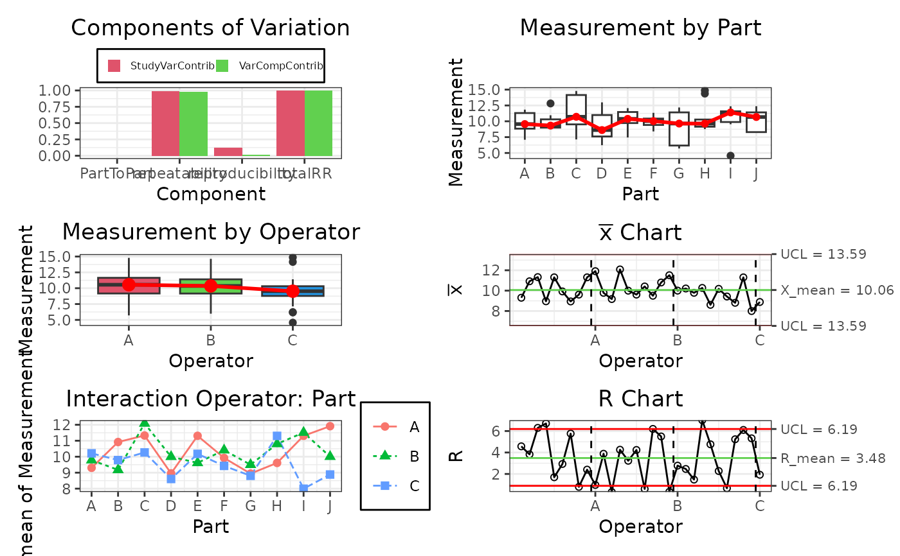

gageRR: Gage R&R - Gage Repeatability and Reproducibility
Source:R/2.3_gageRR_Functions.R
gageRR.RdPerforms a Gage R&R analysis for an object of class gageRR.c.
Usage
gageRR(
gdo,
method = "crossed",
sigma = 6,
alpha = 0.25,
tolerance = NULL,
dig = 3,
print = TRUE
)Arguments
- gdo
Needs to be an object of class
gageRR.c.- method
Character string specifying the Gage R&R method.
`crossed`which is the typical design for performing a Measurement Systems Analysis using Gage Repeatability and Reproducibility or`nested`which is used for destructive testing (i.e. the same part cannot be measured twice). Operators measure each a different sample of parts under the premise that the parts of each batch are alike. By defaultmethodis set to`crossed`.- sigma
Numeric value giving the number of sigmas. For
sigma=6this relates to 99.73 percent representing the full spread of a normal distribution function (i.e.pnorm(3) - pnorm(-3)). Another popular settingsigma=5.15relates to 99 percent (i.e.pnorm(2.575) - pnorm(-2.575)). By defaultsigmais set to `6`.- alpha
Alpha value for discarding the interaction Operator:Part and fitting a non-interaction model. By default
alphais set to `0.25`.- tolerance
Mumeric value giving the tolerance for the measured parts. This is required to calculate the Process to Tolerance Ratio. By default
toleranceis set toNULL.- dig
numeric value giving the number of significant digits for
format. By defaultdigis set to `3`.Print the summary of the perform of the Gage.
Value
The function gageRR returns an object of class gageRR.c and shows typical Gage Repeatability and Reproducibility Output including Process to Tolerance Ratios and the number of distinctive categories (i.e. ndc) the measurement system is able to discriminate with the tested setting.
Examples
# Create de gageRR Design
design <- gageRRDesign(Operators = 3, Parts = 10, Measurements = 3,
method = "crossed", sigma = 6, randomize = TRUE)
design$response(rnorm(nrow(design$X), mean = 10, sd = 2))
# Results of de Design
result <- gageRR(gdo = design, method = "crossed", sigma = 6, alpha = 0.25)
#>
#> AnOVa Table - crossed Design
#> Df Sum Sq Mean Sq F value Pr(>F)
#> Operator 2 12.01 6.007 1.360 0.264
#> Part 9 32.73 3.637 0.824 0.597
#> Operator:Part 18 50.75 2.819 0.638 0.854
#> Residuals 60 264.96 4.416
#>
#> ----------
#> AnOVa Table Without Interaction - crossed Design
#> Df Sum Sq Mean Sq F value Pr(>F)
#> Operator 2 12.01 6.007 1.484 0.233
#> Part 9 32.73 3.637 0.899 0.531
#> Residuals 78 315.71 4.048
#>
#> ----------
#>
#> Gage R&R
#> VarComp VarCompContrib Stdev StudyVar StudyVarContrib
#> totalRR 4.1128 1.0000 2.028 12.17 1.000
#> repeatability 4.0475 0.9841 2.012 12.07 0.992
#> reproducibility 0.0653 0.0159 0.256 1.53 0.126
#> Operator 0.0653 0.0159 0.256 1.53 0.126
#> Operator:Part 0.0000 0.0000 0.000 0.00 0.000
#> Part to Part 0.0000 0.0000 0.000 0.00 0.000
#> totalVar 4.1128 1.0000 2.028 12.17 1.000
#>
#> ---
#> * Contrib equals Contribution in %
#> **Number of Distinct Categories (truncated signal-to-noise-ratio) = 1
#>
class(result)
#> [1] "gageRR.c" "R6"
result$plot()
